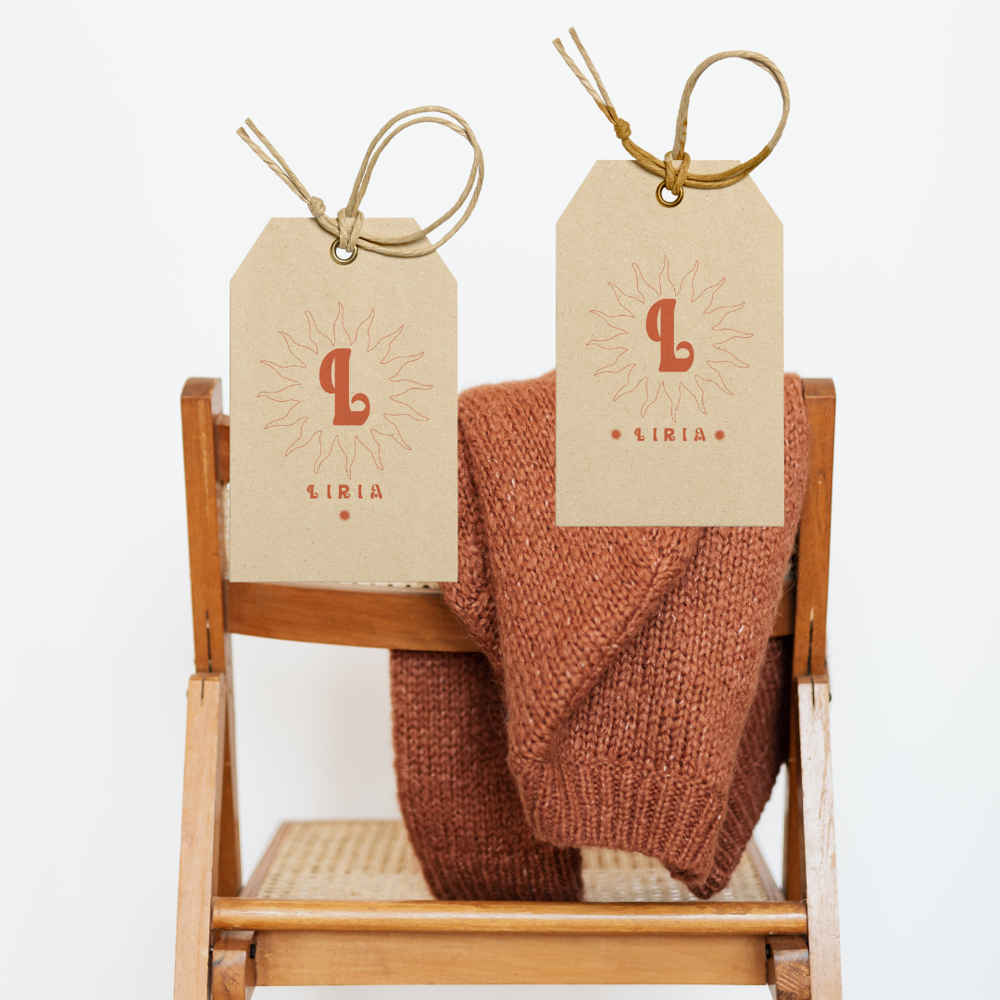
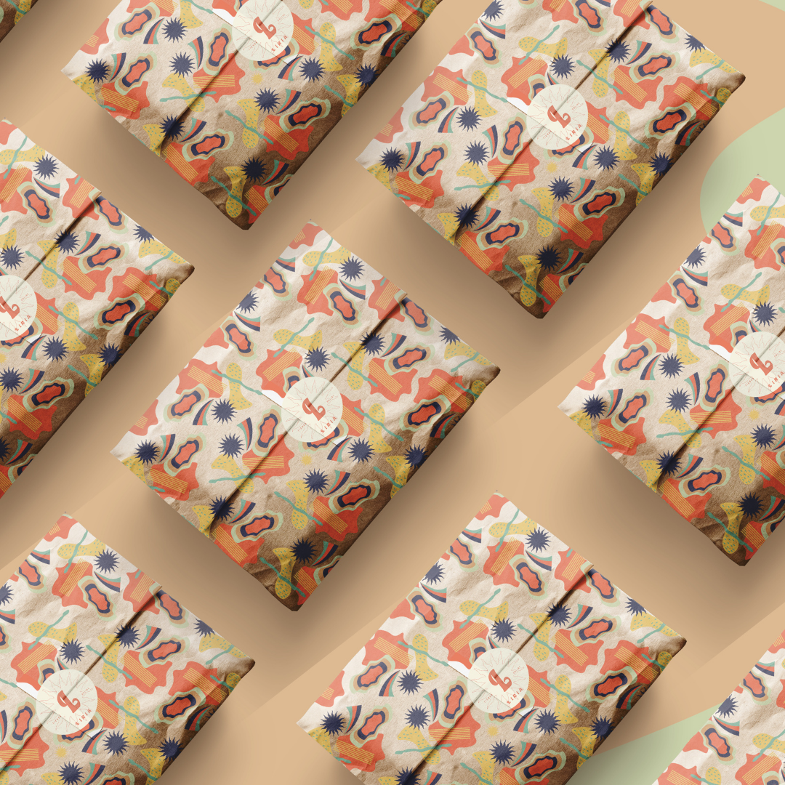
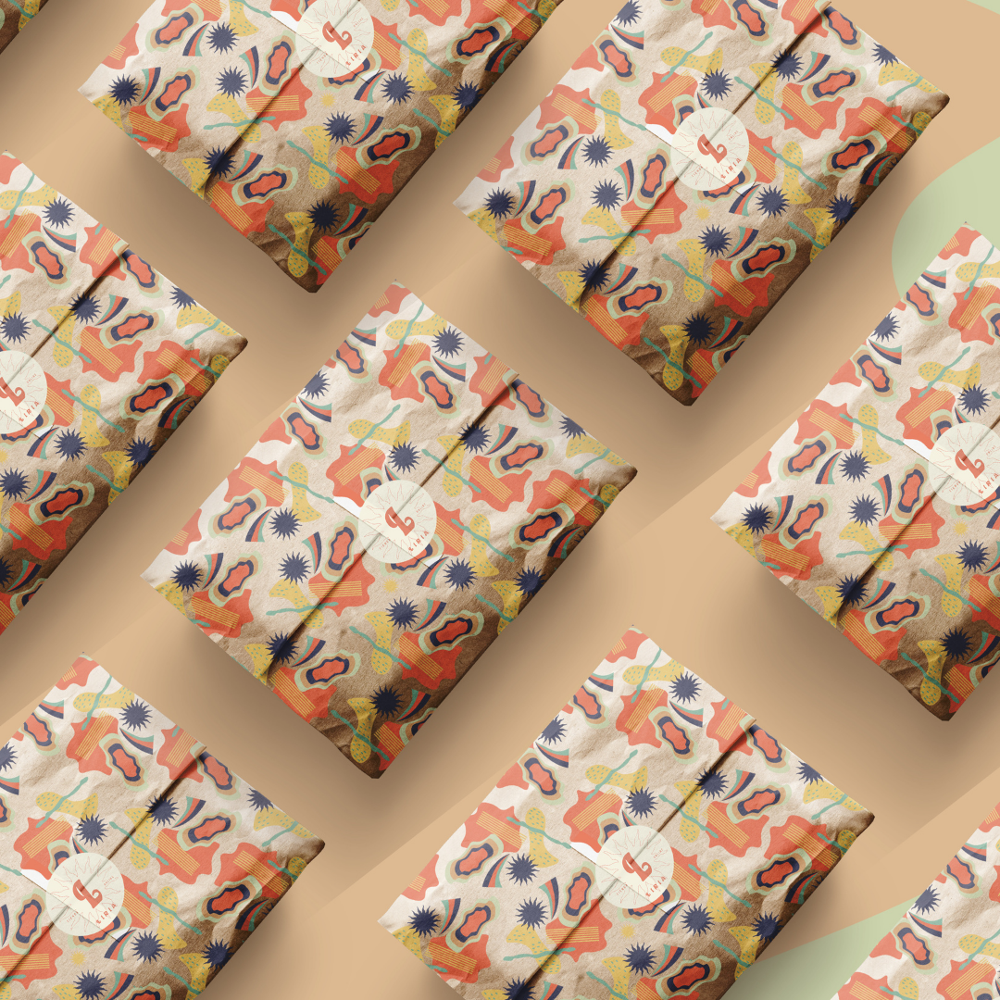
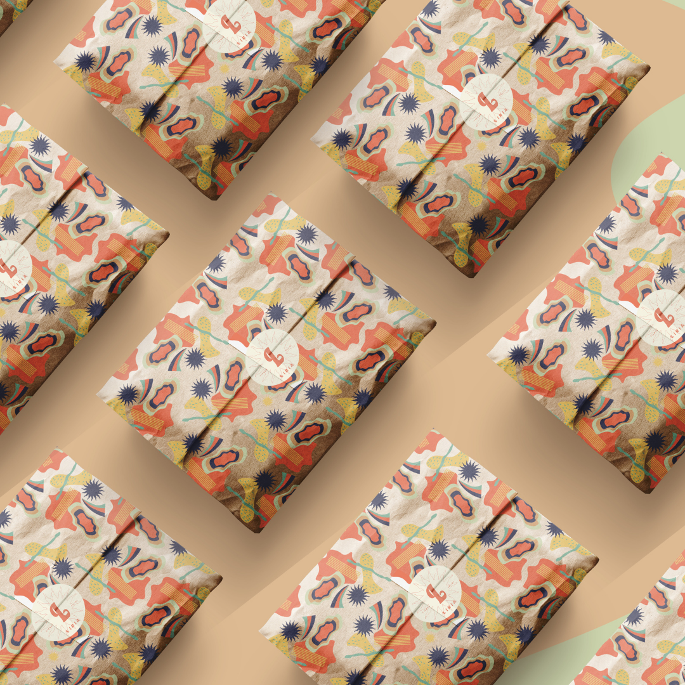

sitema de diseño
Para la creación de la marca hemos utilizado dos colores principales: el verde oliva, que transmite naturaleza y tranquilidad, junto con el color coral, vibrante y cálido, para la tipografía, añadiendo energía y un gran atractivo visual. Como color secundario, seleccionamos el color beige, que aporta calma y serenidad, utilizado en fondos que resaltan el producto sin robarle protagonismo.
En conjunto, estos colores pueden crean la esencia nostálgica y estilística que caracteriza este tipo de establecimientos. El logo transmite una sensación de autenticidad, calidad y estilo atemporal, que podrá atraer a clientes que valoran la moda vintage con un toque contemporáneo.
#EDEBDD
#CDD5AE
#DE7A60



 

